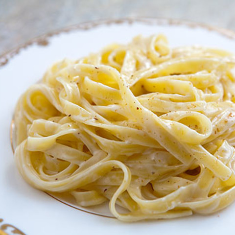

To Die For Fettuccine Alfredo

Description
This fettuccine alfredo is to die for AND we mean it! Buttery,
creamy, and cheesy: this fettuccine alfredo is so good you won't
miss the meat!
Ingredients
- 24 ounces dry fettuccine pasta
- 1 cup butter
- 3/4 pint heavy cream
- salt and pepper to taste
- 1 dash garlic salt
- 3/4 cup grated Romano cheese
- 1/2 cup grated Parmesan cheese
Steps
- Bring a large pot of lightly salted water to a boil.
Add fettuccine and cook for 8 to 10 minutes or until al dente; drain
- In a large saucepan, melt butter into cream over low heat. Add salt, pepper, and garlic salt.
Stir in cheese over medium heat until melted; this will thicken the sauce
- Add pasta to sauce. Use enough pasta so that all of the sauce is used and the
pasta is thoroughly coated. Serve immediately.